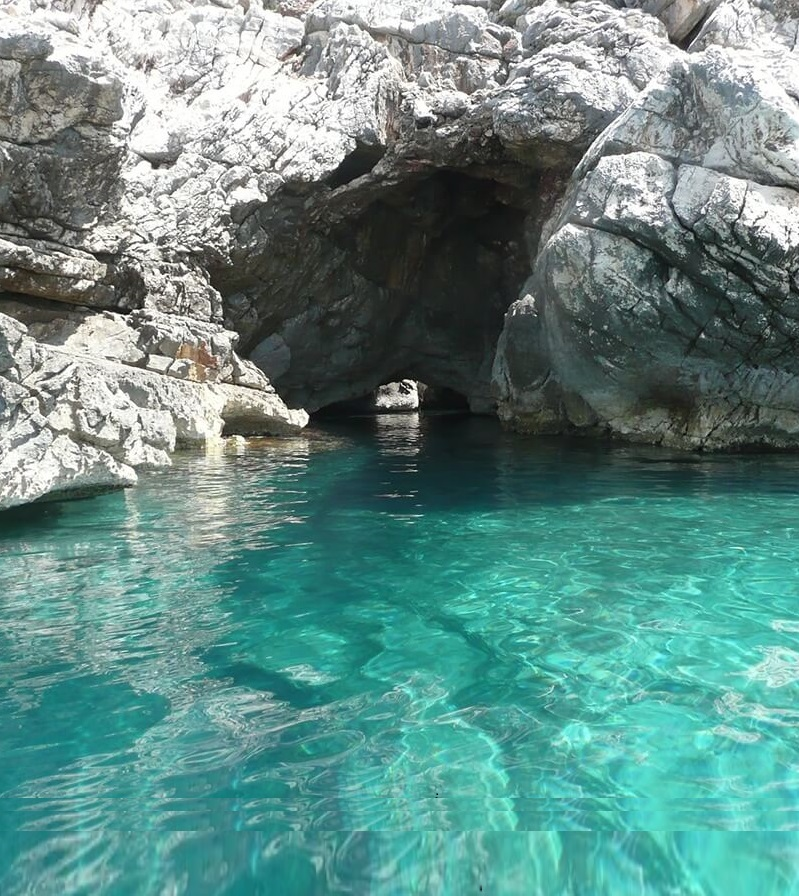
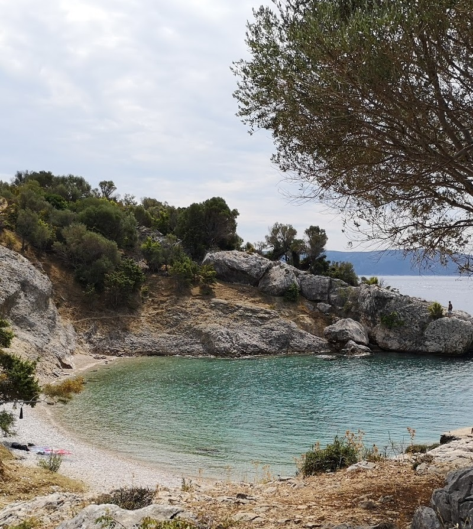
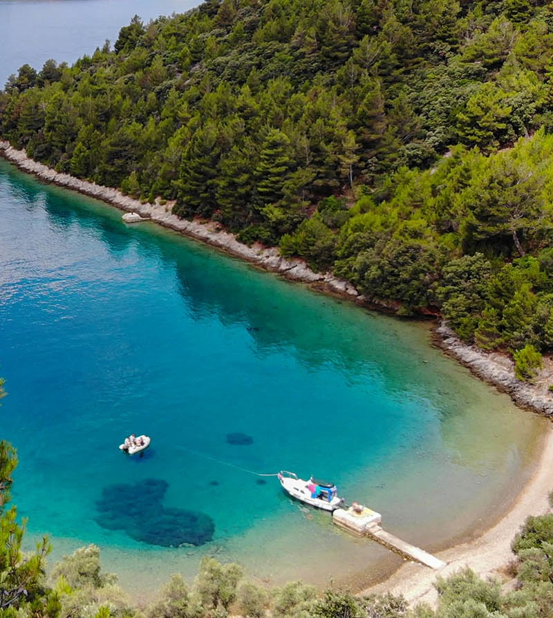

Explore the Island and its surroundings
Many beaches can only be reached by narrow paths that descend steeply from the slopes raised above the sea.
The most attractive beaches are definitely Sv. Blaž, Mali bok, Plave grote and Luka (the beach below Lubenica).
Along the entire coast there are many small, isolated bays that can only be reached from the sea side.
These bays primarily attract adventurers and visitors looking for peace and rest, far from
the hustle and bustle, but also the comfort offered by larger swimming pools.
One of the most beautiful idyllic bays surrounded by
high rocks. Here the sea changes many shades of blue,
and the beach is surrounded by untouched nature.
The beach is located in Beli, right next to the small port.
It is beautifully decorated, and is adorned with large pebbles and clear sea.
On one side, the beach is in contact with the rocks, while on the
the walled part of the port continues on the other side.
In the immediate vicinity of the bay of Žanje, there is a beautiful
pebble beach - one of the most beautiful secluded beaches
in the world. The German magazine Bild ranked it 15th.
a place in the competition of the 40 most beautiful beaches in the world.

Plava Grota is located in the bay of Žanje,
at the foot of Lubenica on the island of Cres.
Plava Grota is a sea cave located on the edge
beaches in the rock.
You can enter the cave by swimming, it is about 20 meters long and in her
inland is a small pebble beach.
At the northern exit from Cres, there is a beautiful
Kovačine beach. The beach has a diverse configuration,
from concrete plateaus to fine speckled sand
rocks emerging from the depths. There is also an FKK part of the beach.

Sv.Blaž beach is located on the northern part of the coast of the island of Cres.
The beach can be reached by land and sea.
The local road that will take you to the beach goes from Cres.
The beach is special because of the rocks and the view of Istria.
It is great for nature lovers.
Valun is a small seaside village where they are located
two beautiful pebble beaches. The beach in Racija bay
characterized by the surrounding dense pine forest, a beautiful beach
and crystal clear sea. The place has everything you need
for a pleasant all-day stay on the beach.
Buc beach is located on the western part of the coast of the island of Cres.
It is located outside the village, near Valun. The beach can be reached by land and
of course by sea, it is recommended to rent a boat or a taxi boat.
It's great for people who love
peace and quiet.

Nedomišje beach is definitely one of the most beautiful coves in Cres.
The sea is crystal clear, and the beach is surrounded by natural beauty
untouched nature.
There is no shade on the beach, so bring an umbrella or look for shade on the 20th
m from the beach in the olive grove.
Exploring and discovering islands from the sea is a special experience. True respect inspires
a scene that, due to its playful relief and size, shows the steep rise of rocks above the sea.
It acts as a guardian protecting the Kvarner Bay from invaders. That's where his firmness is soothed
green slopes and wonderful pebble beaches that invite visitors to their coves
crystal clear sea.
Boaters will find everything they need for carefree sailing in the modern marina, located in the bay of Cres.
enjoying the charms of the island. There you can find shelter even in the face of the strongest winds.
The long coastline of the island, rich in numerous bays and beaches, and sailing among the nearby smaller islets, enables an intimate experience of the sea.